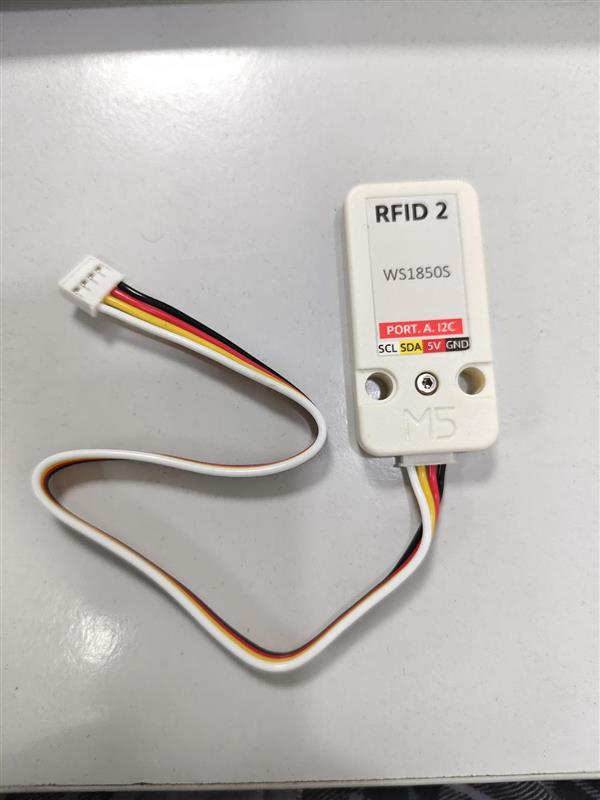
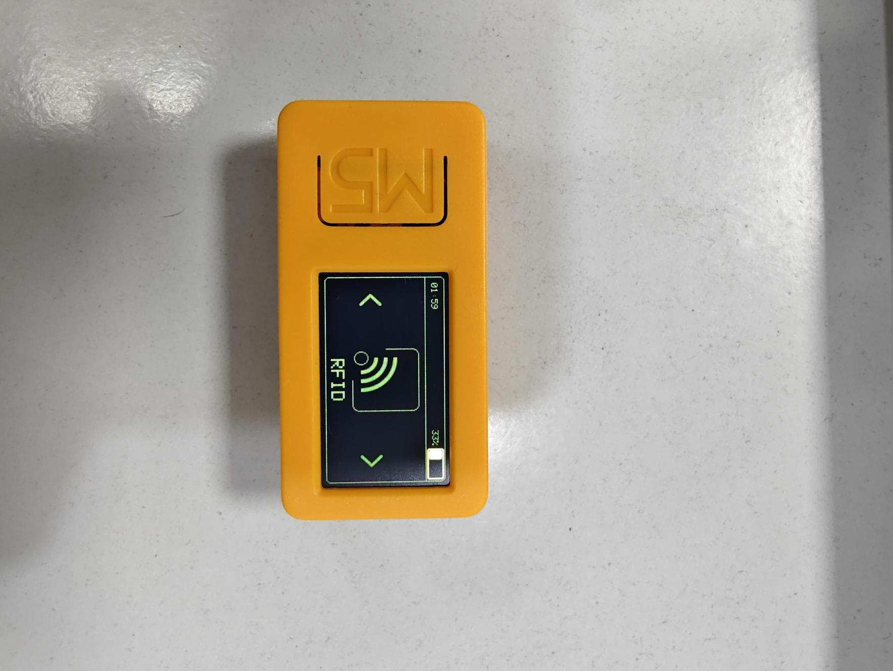
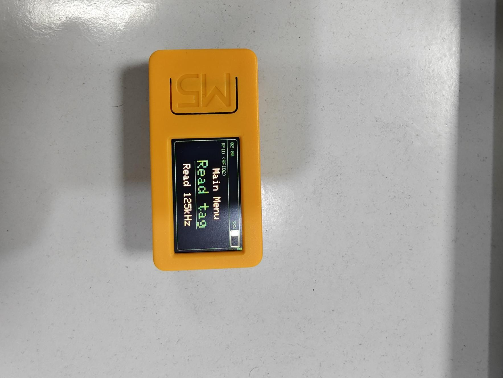
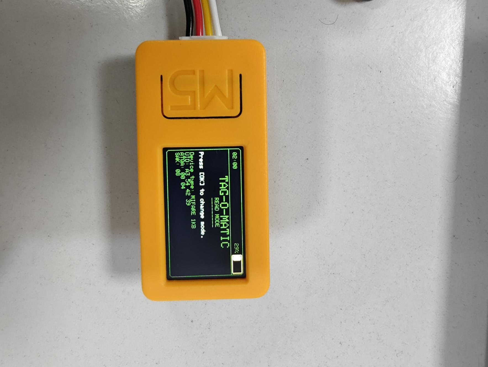

RFID access card systems form the backbone of physical security in countless organizations worldwide. This guide demonstrates how easily these systems can be compromised using portable hardware, revealing critical vulnerabilities in widely deployed access control infrastructure and highlighting the urgent need for upgraded security implementations.
Table of Contents
- Attack Overview
- Prerequisites and Setup
- RFID Module Configuration
- Card Scanning Process
- Card Cloning Execution
- RFID Vulnerabilities
- Security Algorithms Analysis
- Defense Strategies
Attack Overview
RFID card cloning represents one of the most straightforward yet devastating attacks against physical access control systems. The ability to duplicate access credentials in seconds exposes fundamental weaknesses in organizational security perimeters.
Prerequisites and Setup
This guide builds upon the foundation established in our previous RF security research. For detailed M5Stick CPlus 2 setup and Bruce firmware installation, please refer to our comprehensive guide:
Additional Hardware Requirements
Beyond the base M5Stick CPlus 2 setup, RFID operations require:
RFID-Specific Components:
- RFID Module: Compatible 13.56MHz reader (MFRC522 or similar)
- Combined Connector: Pre-wired connection module (included with RFID module)
- Blank RFID Cards: Writable cards for cloning operations
- Target Cards: Access cards to analyze and clone (authorized testing only)
RFID Module Configuration
The RFID module connection process is significantly simplified compared to individual wire connections used with other modules.
Simplified Connection Process
The RFID module comes with a combined connector that eliminates manual wiring:
# RFID Module Connection:
# - Combined connector pre-wired for M5Stick CPlus 2
# - Simple plug-and-play installation
# - No individual wire connections required
# - Automatic pin mapping handled by connector
# - Power and data connections established simultaneouslyThis streamlined approach reduces connection errors and accelerates deployment in field operations.
Module Detection Verification
After connecting the RFID module, verify successful detection through the Bruce firmware interface:
# Verification steps:
# 1. Power on M5Stick CPlus 2 with connected RFID module
# 2. Boot Bruce firmware successfully
# 3. Navigate to RFID section in main menu
# 4. Confirm module detection and initialization
# 5. Verify 13.56MHz frequency operationCard Scanning Process
RFID card analysis reveals the structure, security implementation, and exploitable vulnerabilities of target access systems.
Accessing RFID Functions
Navigate to the RFID section through the Bruce firmware menu system:
# Navigation path:
# Main Menu -> RFID -> Scan Options
# Available functions:
# - Read Card Data
# - Write Card Data
# - Clone Card
# - Erase Card
# - Card AnalysisInitiating Card Scan
Begin the scanning process to analyze target card structure and data:
# Scanning procedure:
# 1. Select "Scan Card" from RFID menu
# 2. Position target card over RFID antenna
# 3. Maintain steady card placement during scan
# 4. Wait for complete data extraction (2-3 seconds)
# 5. Review extracted block data on displayData Extraction Results
The scanning process reveals comprehensive card information:
# Extracted information includes:
# - Card UID (Unique Identifier)
# - Block structure and data content
# - Access control bits
# - Security implementation details
# - Encryption algorithm identification
# - Memory layout and sector informationCard Cloning Execution
Once card data is extracted, the cloning process creates an identical duplicate capable of bypassing access controls.
Cloning Prerequisites
Successful card cloning requires specific materials:
Required for Cloning:
- Blank Writable Card: Compatible RFID card with same frequency
- Matching Card Type: Same technology (Mifare Classic, DESFire, etc.)
- Sufficient Storage: Blank card capacity must match or exceed original
- Write Access: Card must not be permanently write-protected
Cloning Process
After scanning the target card, initiate the cloning sequence:
# Cloning workflow:
# 1. Press main button after successful card scan
# 2. Select "Clone" from available options
# 3. Remove original card from antenna area
# 4. Place blank card over RFID antenna
# 5. Confirm cloning operation
# 6. Wait for successful data transfer completion
# 7. Verify clone integrity through read-back operationAlternative Operations
The Bruce firmware provides multiple data manipulation options:
# Available operations after card scan:
# - Clone: Duplicate to blank card
# - Save: Store data for later use
# - Erase: Clear card data completely
# - Write: Program specific data blocks
# - Analyze: Detailed security assessmentVerification and Testing
After cloning completion, verify the duplicate card functionality:
# Clone verification steps:
# 1. Scan cloned card to verify data integrity
# 2. Compare block-by-block data with original
# 3. Test clone against target access system (authorized testing only)
# 4. Verify access permissions and functionality
# 5. Document any discrepancies or failuresRFID Vulnerabilities
The ease of RFID cloning exposes fundamental security weaknesses in widely deployed access control systems.
Common Vulnerability Categories
Primary RFID Security Weaknesses:
- Static Data: Unchanging card identifiers enable perfect duplication
- Weak Encryption: Easily broken or absent cryptographic protection
- Proximity Reading: Cards readable from several centimeters away
- No Mutual Authentication: Readers don't verify card authenticity
- Legacy Algorithms: Outdated security implementations
Real-World Impact
Organizations worldwide rely on vulnerable RFID systems for critical security functions:
- Corporate Access: Employee badges and building entry systems
- Government Facilities: Sensitive area access control
- Healthcare Systems: Patient data and restricted area access
- Educational Institutions: Dormitory and facility access
- Transportation: Transit cards and vehicle access systems
Security Algorithms Analysis
Understanding RFID security implementations is crucial for assessing organizational risk and selecting appropriate defensive measures.
Vulnerable Algorithms
Mifare Classic (Extremely Vulnerable)
# Mifare Classic Security Analysis:
# - CRYPTO1 cipher: Completely broken
# - 48-bit keys: Brute-forcible in seconds
# - Authentication: Easily bypassed
# - Encryption: Trivially defeatable
# - Status: AVOID AT ALL COSTSMifare Classic cards can be completely compromised in under 30 seconds using readily available tools. Organizations still using these cards face immediate security risk.
Mifare Plus (Moderate Security)
# Mifare Plus Security Features:
# - AES-128 encryption: Industry standard
# - Mutual authentication: Reader and card verify each other
# - Session keys: Dynamic encryption per transaction
# - Security level: Significantly improved over Classic
# - Status: Acceptable for medium-security applicationsMifare DESFire (Strong Security)
# Mifare DESFire Advanced Security:
# - Triple DES or AES encryption options
# - Application-level security
# - Key diversification support
# - Secure messaging protocols
# - Multiple application isolation
# - Status: Recommended for high-security environmentsAlgorithm Recommendations
Security Implementation Guidelines:
- Immediate Replacement: Mifare Classic systems must be upgraded
- Minimum Standard: Mifare Plus for basic security requirements
- High Security: Mifare DESFire EV2 for sensitive applications
- Enterprise: Consider multi-factor authentication integration
- Future-Proofing: Plan for algorithm upgrades and crypto-agility
Defense Strategies
Protecting against RFID cloning requires comprehensive security measures addressing both technical and procedural vulnerabilities.
Technical Countermeasures
Primary Technical Defenses:
- Upgrade Algorithms: Replace vulnerable Mifare Classic with DESFire
- Multi-Factor Authentication: Combine RFID with PIN, biometrics, or mobile
- Encrypted Communication: Secure reader-to-server communications
- Regular Key Rotation: Implement periodic cryptographic key updates
- Reader Security: Harden and monitor access control readers
Physical Protection
RFID cards require physical protection against unauthorized scanning:
# Physical Protection Methods:
# - RFID-blocking wallets and card holders
# - Faraday cage pouches for storage
# - Shielded badge holders for employees
# - Distance-limiting card positioning
# - Metal-lined storage containersProcedural Safeguards
- Access Monitoring: Log and analyze all card usage patterns
- Anomaly Detection: Identify unusual access attempts or timings
- Regular Audits: Periodic security assessments of RFID systems
- Employee Training: Educate users about RFID security risks
- Incident Response: Rapid response procedures for suspected compromise
Detection and Monitoring
# Monitoring strategies:
# - Duplicate card usage detection
# - Geographically impossible access patterns
# - Time-based access anomalies
# - Failed authentication clustering
# - Reader tampering indicatorsAdvanced Protection Mechanisms
Next-Generation RFID Security:
- Dynamic Data: Changing card identifiers per transaction
- Challenge-Response: Cryptographic proof of authenticity
- Blockchain Integration: Distributed access control verification
- AI-Powered Analysis: Machine learning for access pattern analysis
- Zero-Trust Architecture: Continuous verification of all access attempts
Industry Impact and Recommendations
The ease of RFID cloning has profound implications for organizations relying on card-based access control.
Immediate Action Items
- Security Assessment: Audit current RFID implementations immediately
- Algorithm Identification: Determine which cards use vulnerable Mifare Classic
- Upgrade Planning: Develop timeline for replacing insecure systems
- Interim Measures: Implement additional security layers during transition
- Staff Education: Train personnel on RFID security awareness
Future of RFID Security
RFID technology continues evolving with improved security features and integration capabilities:
- Enhanced Encryption: Post-quantum cryptographic algorithms
- Biometric Integration: Combined RFID and biometric authentication
- Mobile Integration: Smartphone-based access control systems
- IoT Connectivity: Network-aware access control systems
- AI Enhancement: Intelligent threat detection and response
Conclusion
RFID card cloning demonstrates critical vulnerabilities in widely deployed physical security systems. The ability to duplicate access credentials in seconds using portable, inexpensive hardware exposes organizations to significant security risks.
The M5Stick CPlus 2 platform illustrates how accessible modern security testing tools have become. While this accessibility benefits security professionals conducting authorized assessments, it also empowers malicious actors seeking unauthorized access.
Organizations must urgently assess their RFID implementations, particularly those using vulnerable Mifare Classic cards. The transition to stronger security algorithms like Mifare DESFire, combined with multi-factor authentication and comprehensive monitoring, represents the minimum acceptable security posture for modern access control systems.